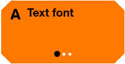
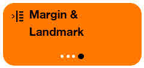

Orange Comfort+
For more user-friendly web pages
Highlight the accessibility of your website.
Orange Comfort+ is a browser extension that facilitates reading and navigation on web pages. It adjusts the display of text, buttons, links, as well as vocalization and navigation by offering specific buttons, a large mouse pointer, a highly visible focus, and quick access to numerous settings.
Orange Comfort+ is a free (open-source) browser extension available on Firefox, Edge and Chrome.
On certain websites, Comfort+ is already installed. In such cases, you can access it directly via the badge displayed at the top right corner, as is the case on this site.
Who is the Orange Comfort+ Service For?
The Comfort+ palette is organized into groups of settings, some designed for users seeking just a bit more ease of use ( Easy+ mode), others for those looking for light visual adjustments ( Visual+ mode) or more advanced visual settings such as high zoom and very high contrast ( Visual++ mode).
Other settings are aimed at users needing reading accommodations,
such as highly legible and vocalized text
( Reading+ mode) or more advanced tools like rulers, margins, and colorization
( Reading++ mode).
Finally, navigation settings are available for users who have difficulty with
the mouse pointer and prefer larger buttons or even no-click navigation with
automatic hovering clicks
( Pointing+ mode).
Additional settings are available for users who navigate web pages
exclusively using buttons or keyboard commands
( Motor+ mode).
For web developers, Comfort+ is an excellent way to showcase the accessibility improvements made to their websites.
Where Does Orange Comfort+ Come From?
The Orange Comfort+ service was created by Orange. It embodies a design approach centered on the diversity of users and follows the principles of universal design: an interface for everyone, with personalized settings for each individual.
Prerequisites
Comfort+ settings will only work correctly on websites that comply with accessibility standards. If a site is inaccessible, its functionality may be significantly compromised. A Pause button allows you to temporarily disable Comfort+.
If Comfort+ does not improve the website, it indicates that the site does not comply with accessibility standards. This is an opportunity to report inaccessible websites and to recognize the accessibility efforts made by certain sites.
How to Get It
The Comfort+ extension is available in the list of extensions for Firefox, Chrome, and Edge browsers.
Downloading the Extension
The latest version is experimental.
If you choose to install this version, please help us improve it by sending your feedback
by email to confort.plus@orange.com.
Version 5.0.0-beta.8 (experimental)
Previous version (4.3.6)
This extension is still available on version 4 website.
Installing Comfort+
Edge
In the window that opens, click on "Add an extension." To activate the extension, click on the Extensions icon at the top of your screen and then click on the Orange Comfort+ icon.
Chrome
In the window that opens, click on "Add the extension." To activate the extension, click on the Extensions icon at the top of your screen and then click on the Orange Comfort+ icon.
Firefox
In the window that opens, click on "Add." From the Firefox browser, click on the Extensions icon at the top right of your screen, then on the Orange Comfort+ gear icon to add it to the navigation bar.
Using Comfort+
Choosing Your Usage Mode
Explore the usage modes and select the one that suits you best by clicking on "Validate this mode."
If you are unsure between two modes, don’t worry—all settings a re available in all usage modes. You can refine your personalized settings.
By returning to this screen, you can also reset the usage mode.
Once the mode is chosen, you can close the Comfort+ palette by clicking on the double-arrow at the top right of the palette.
To reopen the palette, simply click on the icon representing a human figure in a circle , the symbol of universal accessibility.
Pause
Some pages are so non-compliant with accessibility standards that Comfort+ may cause more visual issues than benefits. In such cases, it is practical to disable all Comfort+ settings at once. To do this, press the Pause button.
Multi-click Buttons
To modify settings, you have quick access to a selection via large buttons. These buttons can be clicked multiple times in a row (3 or 4 times), and the various settings will then be applied to the webpage.
The first setting of each button (when the black dot is farthest to the left) has no effect; it does not modify the current page. This is a way to cancel a setting.
Complete Settings
By clicking on the "All Settings" button at the bottom of the home palette, you can access all the settings available in all usage modes. The list is long and divided into categories (Text, Display, Images, Audio, Navigation). The "More Choices" buttons allow access to advanced settings that provide additional options.
Advanced Settings
Advanced settings allow you to navigate through an even wider range of options for each setting. If you choose a setting that is not already present in the corresponding multi-click button, it will be added as a 4th personalized choice.
Saving Your Settings
Comfort+ will remember your settings for each website visited. This allows you to apply specific settings to one page and different settings to another. When you return to these sites, Comfort+ will automatically apply the appropriate settings for each page.
Are You a Developer?
Integrate Orange Comfort+ into Your Page
The service is minimally intrusive and integrates as a button. Comfort+ enhances the usability of the site but will not fix a site that does not comply with accessibility standards.
For Comfort+ to offer an optimal solution, your site must comply with WCAG 2.2 or RGAA 4.1.2 accessibility recommendations.
When the service is activated by a user, a navigation palette is displayed.
To add the Orange Comfort+ service to your site, simply include a JavaScript file in your HTML code.
The JavaScript file for the Orange Comfort+ service must be hosted on a server. This server can be your site’s server or a remote server hosted by a partner (on a different domain). If you choose to use a remote server hosted by a partner, the user of the Orange Comfort+ service will find their settings on all sites using this server.
Accessibility of Orange Comfort+
Orange Comfort+ has not undergone a WCAG accessibility audit. Consult the compliance statement.